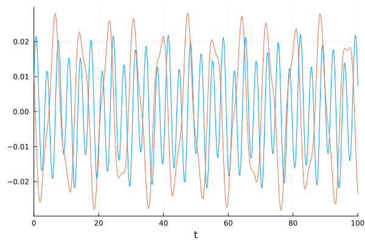
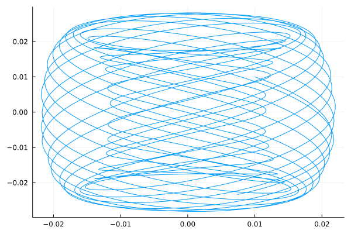
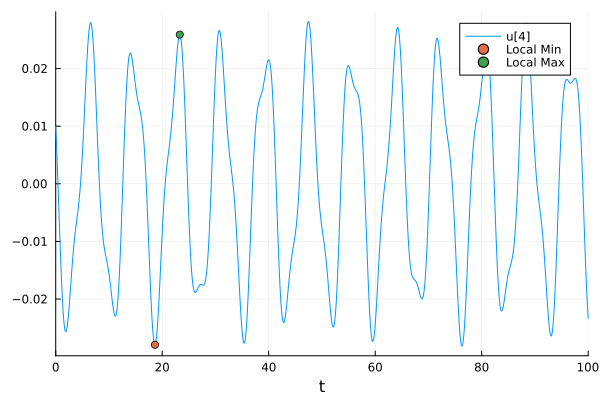
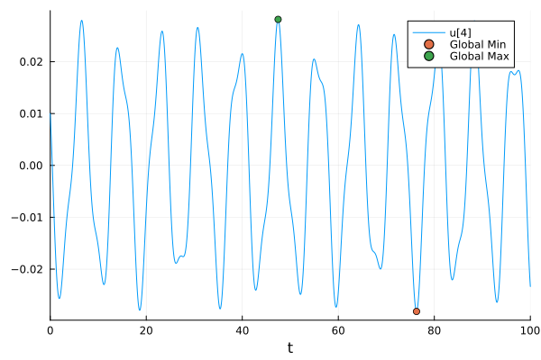

Finding Maxima and Minima of ODEs Solutions
Setup
In this tutorial, we will show how to use Optimization.jl to find the maxima and minima of solutions. Let's take a look at the double pendulum:
#Constants and setup
import OrdinaryDiffEq as ODE
initial = [0.01, 0.01, 0.01, 0.01]
tspan = (0.0, 100.0)
#Define the problem
function double_pendulum_hamiltonian(udot, u, p, t)
α, lα, β, lβ = u
return udot .= [
2(lα - (1 + cos(β))lβ) / (3 - cos(2β)),
-2sin(α) - sin(α + β),
2(-(1 + cos(β))lα + (3 + 2cos(β))lβ) / (3 - cos(2β)),
-sin(α + β) - 2sin(β) * (((lα - lβ)lβ) / (3 - cos(2β))) +
2sin(2β) * ((lα^2 - 2(1 + cos(β))lα * lβ + (3 + 2cos(β))lβ^2) / (3 - cos(2β))^2),
]
end
#Pass to solvers
poincare = ODE.ODEProblem(double_pendulum_hamiltonian, initial, tspan)ODEProblem with uType Vector{Float64} and tType Float64. In-place: true
Non-trivial mass matrix: false
timespan: (0.0, 100.0)
u0: 4-element Vector{Float64}:
0.01
0.01
0.01
0.01sol = ODE.solve(poincare, ODE.Tsit5())retcode: Success
Interpolation: specialized 4th order "free" interpolation
t: 193-element Vector{Float64}:
0.0
0.08332584852065579
0.24175300745938438
0.43895335843762917
0.6797301452523563
0.9647629907566715
1.317942634581891
1.7031226293414243
2.067850440442259
2.471790033442069
⋮
95.8457262203732
96.35778580494238
96.92912862815753
97.44679020089448
97.96248000327545
98.511829144192
99.06082277412813
99.58284090343349
100.0
u: 193-element Vector{Vector{Float64}}:
[0.01, 0.01, 0.01, 0.01]
[0.00917068738040534, 0.0066690004553842845, 0.012420525490765832, 0.008266408515192912]
[0.007673275251908225, 0.00037461731659181857, 0.016442590263187718, 0.004636827445198737]
[0.006125974386969518, -0.007305450376345029, 0.01996737114712719, -0.000336498110075906]
[0.004966110634454894, -0.016308516887941948, 0.021440659467349635, -0.006705037355788198]
[0.004795568376382576, -0.026238104439258034, 0.018824324720089863, -0.013913365232392881]
[0.0060546801759867735, -0.037124553877602696, 0.010055700596830874, -0.021038128619520195]
[0.0079007845151243, -0.04667607019119326, -0.0026735827338296827, -0.025183036416880855]
[0.008276510390197679, -0.05278433418538529, -0.012731547350727518, -0.02525804018138683]
[0.005523496259016717, -0.05525250413162684, -0.016843881833516802, -0.021898962639986412]
⋮
[-0.01488678075505991, 0.042332611211393485, 0.013628256972608126, 0.018029076395289643]
[-0.008190357160779324, 0.0544226010040873, 0.009448118687671802, 0.017740074681545835]
[0.004124582499901603, 0.056748831427927325, -0.005154034179363454, 0.01759697701503236]
[0.013079672496348446, 0.04807714377965154, -0.013770642221174065, 0.0182866458341988]
[0.015316052673801216, 0.03163113673720942, -0.008957098465011248, 0.01711843438015287]
[0.011115541583963736, 0.009929212301187733, 0.007297328811066474, 0.010353459619031339]
[0.005713897353231172, -0.011787330805179734, 0.020508033008029475, -0.002310391858337856]
[0.004211435648470633, -0.029911105943331896, 0.01875050116161112, -0.015650643837065582]
[0.005741239573727518, -0.041653859885220294, 0.007413270266106322, -0.02334897844061598]In time, the solution looks like:
import Plots: gr, plot, scatter!
gr()
plot(sol, vars = [(0, 3), (0, 4)], leg = false, plotdensity = 10000)
while it has the well-known phase-space plot:
plot(sol, vars = (3, 4), leg = false)
Local Optimization
Let's find out what some of the local maxima and minima are. Optim.jl can be used to minimize functions, and the solution type has a continuous interpolation which can be used. Let's look for the local optima for the 4th variable around t=20. Thus, our optimization function is:
f(t, _) = sol(first(t), idxs = 4)f (generic function with 1 method)first(t) is the same as t[1] which transforms the array of size 1 into a number. idxs=4 is the same as sol(first(t))[4] but does the calculation without a temporary array and thus is faster. To find a local minimum, we can solve the optimization problem where the loss function is f:
import Optimization as OPT, ForwardDiff
import OptimizationNLopt: NLopt
optf = OPT.OptimizationFunction(f, OPT.AutoForwardDiff())
min_guess = 18.0
optprob = OPT.OptimizationProblem(optf, [min_guess], lb = [0.0], ub = [100.0])
opt = OPT.solve(optprob, NLopt.LD_LBFGS())retcode: Success
u: 1-element Vector{Float64}:
18.63212745216903From this printout, we see that the minimum is at t=18.63 and the value is -2.79e-2. We can get these in code-form via:
println(opt.u)[18.63212745216903]To get the maximum, we just minimize the negative of the function:
fminus(t, _) = -sol(first(t), idxs = 4)
optf = OPT.OptimizationFunction(fminus, OPT.AutoForwardDiff())
min_guess = 22.0
optprob2 = OPT.OptimizationProblem(optf, [min_guess], lb = [0.0], ub = [100.0])
opt2 = OPT.solve(optprob2, NLopt.LD_LBFGS())retcode: Success
u: 1-element Vector{Float64}:
23.29760651171502Let's add the maxima and minima to the plots:
plot(sol, vars = (0, 4), plotdensity = 10000)
scatter!([opt.u], [opt.objective], label = "Local Min")
scatter!([opt2.u], [-opt2.objective], label = "Local Max")
Global Optimization
If we instead want to find global maxima and minima, we need to look somewhere else. There are many choices for this. A pure Julia option are the BlackBoxOptim solvers within Optimization.jl, but I will continue the story with the OptimizationNLopt methods. To do this, we simply swap out to one of the global optimizers in the list. Let's try GN_ORIG_DIRECT_L:
gopt = OPT.solve(optprob, NLopt.GN_ORIG_DIRECT_L())
gopt2 = OPT.solve(optprob2, NLopt.GN_ORIG_DIRECT_L())
@show gopt.u, gopt2.u([76.29050924187901], [47.460303377482425])plot(sol, vars = (0, 4), plotdensity = 10000)
scatter!([gopt.u], [gopt.objective], label = "Global Min")
scatter!([gopt2.u], [-gopt2.objective], label = "Global Max")